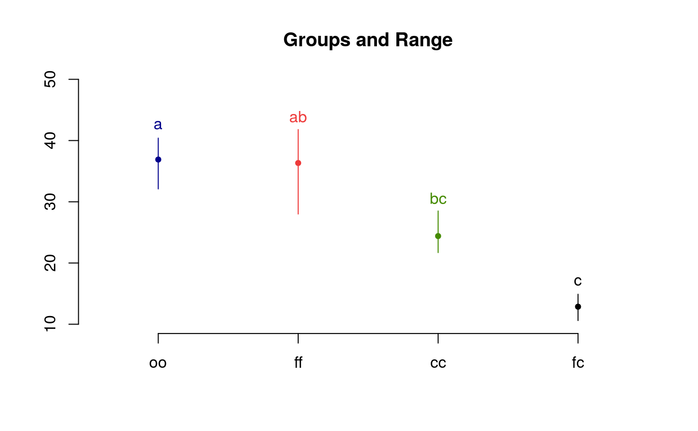

It makes multiple comparisons of treatments by means of Tukey. The level by alpha default is 0.05.
HSD.test( y, trt, DFerror, MSerror, alpha = 0.05, group = TRUE, main = NULL, unbalanced = FALSE, console = FALSE )
| y | model(aov or lm) or answer of the experimental unit |
|---|---|
| trt | Constant( only y=model) or vector treatment applied to each experimental unit |
| DFerror | Degree free |
| MSerror | Mean Square Error |
| alpha | Significant level |
| group | TRUE or FALSE |
| main | Title |
| unbalanced | TRUE or FALSE. not equal replication |
| console | logical, print output |
Statistics of the model
Design parameters
Statistical summary of the study variable
Comparison between treatments
Formation of treatment groups
It is necessary first makes a analysis of variance.
if y = model, then to apply the instruction:
HSD.test (model, "trt",
alpha = 0.05, group = TRUE, main = NULL, unbalanced=FALSE, console=FALSE)
where the model class is aov or lm.
1. Principles and procedures of statistics a biometrical
approach Steel & Torry & Dickey. Third Edition 1997
2. Multiple
comparisons theory and methods. Departament of statistics the Ohio State
University. USA, 1996. Jason C. Hsu. Chapman Hall/CRC.
BIB.test, DAU.test,
duncan.test, durbin.test,
friedman, kruskal, LSD.test,
Median.test, PBIB.test, REGW.test,
scheffe.test, SNK.test,
waerden.test, waller.test,
plot.group
library(agricolae) data(sweetpotato) model<-aov(yield~virus, data=sweetpotato) out <- HSD.test(model,"virus", group=TRUE,console=TRUE, main="Yield of sweetpotato\nDealt with different virus")#> #> Study: Yield of sweetpotato #> Dealt with different virus #> #> HSD Test for yield #> #> Mean Square Error: 22.48917 #> #> virus, means #> #> yield std r Min Max #> cc 24.40000 3.609709 3 21.7 28.5 #> fc 12.86667 2.159475 3 10.6 14.9 #> ff 36.33333 7.333030 3 28.0 41.8 #> oo 36.90000 4.300000 3 32.1 40.4 #> #> Alpha: 0.05 ; DF Error: 8 #> Critical Value of Studentized Range: 4.52881 #> #> Minimun Significant Difference: 12.39967 #> #> Treatments with the same letter are not significantly different. #> #> yield groups #> oo 36.90000 a #> ff 36.33333 ab #> cc 24.40000 bc #> fc 12.86667 c#> Warning: NAs introduced by coercion#> difference pvalue signif. LCL UCL #> cc - fc 11.5333333 0.0686 . -0.8663365 23.9330031 #> cc - ff -11.9333333 0.0592 . -24.3330031 0.4663365 #> cc - oo -12.5000000 0.0482 * -24.8996698 -0.1003302 #> fc - ff -23.4666667 0.0014 ** -35.8663365 -11.0669969 #> fc - oo -24.0333333 0.0012 ** -36.4330031 -11.6336635 #> ff - oo -0.5666667 0.9988 -12.9663365 11.8330031# Old version HSD.test() df<-df.residual(model) MSerror<-deviance(model)/df with(sweetpotato,HSD.test(yield,virus,df,MSerror, group=TRUE,console=TRUE, main="Yield of sweetpotato. Dealt with different virus"))#> #> Study: Yield of sweetpotato. Dealt with different virus #> #> HSD Test for yield #> #> Mean Square Error: 22.48917 #> #> virus, means #> #> yield std r Min Max #> cc 24.40000 3.609709 3 21.7 28.5 #> fc 12.86667 2.159475 3 10.6 14.9 #> ff 36.33333 7.333030 3 28.0 41.8 #> oo 36.90000 4.300000 3 32.1 40.4 #> #> Alpha: 0.05 ; DF Error: 8 #> Critical Value of Studentized Range: 4.52881 #> #> Minimun Significant Difference: 12.39967 #> #> Treatments with the same letter are not significantly different. #> #> yield groups #> oo 36.90000 a #> ff 36.33333 ab #> cc 24.40000 bc #> fc 12.86667 c